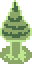
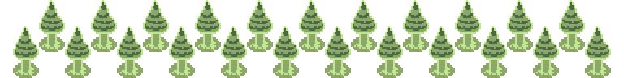

ForestI needed a small music box lullaby for the initial going-to-bed-to-dream sequence, so I adapted part of a song I already composed. This won't be the last time you hear this melody...
This is a very ambient track (the notes start at about 13 seconds in, and are very sparse). In my opinion, it's not very interesting. This melody was composed a long time ago and has sat in my brain ever since. The very open, emotionally ambigous minor 9 chord to start is nice as an introduction to the surreal dream world. A version without the melody can be heard in the main dream hub room.
Fun fact: the music notes in this song are played on a sample instrument, where the samples are pulled from minecraft's note block sounds.
This song is made up of a set of 8-bar loops, that turn on and off. I composed the ostinato that underlies the whole song late at night. The only non-virtual instrument is the bass, which I recorded myself playing. It's not perfect, but I think the imperfections contrast nicely with the perfectly looped and quantized other tracks. The sound design is vaguely inspired by the ambient tracks of OMORI, though I wasn't inspired by any track in particular. The heavy delay really helps the music feel bigger, and gives the space you run around in-game a sense of scale. I hope hearing this track repeat during the grid puzzle wasn't too annoying.
The glowing bat imps are simple and silly creatures, and so a simple and silly song was needed. The lone sine wave carrying the melody is somewhat inspired by the work of the well-known silly music producer Tsundere Twintails. The A-section sounds a bit like an elementary school piano exercise, but I thought it was okay in this instance. The B-section highlights the sort of janky piano soundfont, which comes from Super Mario 64.
